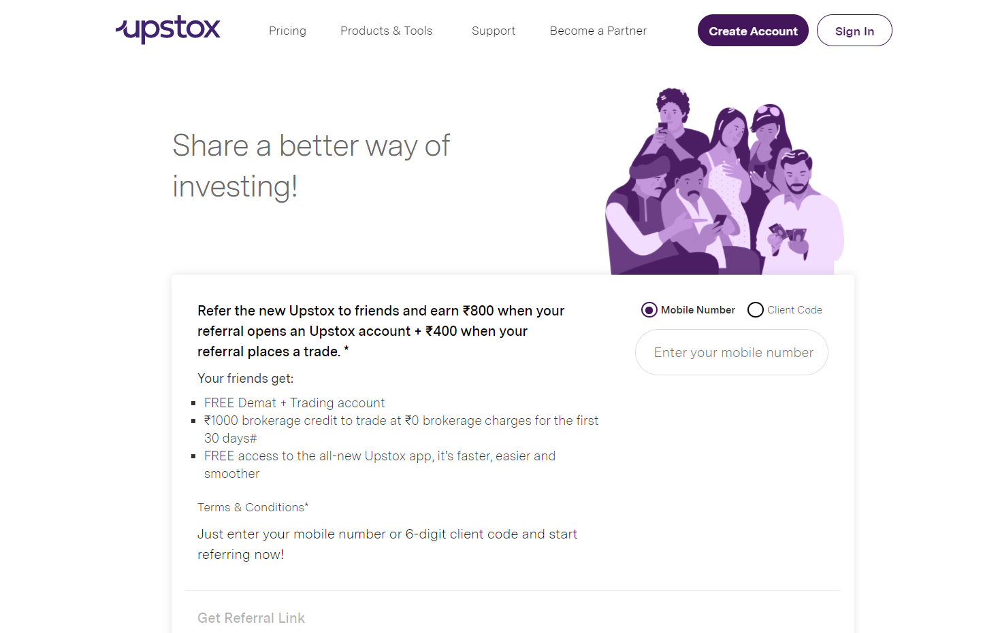

Muy bien, si estás buscando
los mejores nichos de marketing de afiliados
, entonces tu búsqueda ha terminado, ya que en este artículo en particular hablaremos
Los mejores nichos de afiliados
lo que le ayudará a decidir cuál es el mejor y más
rentable nicho de marketing de afiliados para usted.

Puede ver el potencial de ingresos en Programas de afiliados criptográficos.
Entonces, decidiste
iniciar un nuevo blog
sobre marketing de afiliados y
obtener ingresos pasivos en línea.
En primer lugar, déjame felicitarte por
comenzando un nuevo blog
y bienvenido al
comunidad de bloggers
. Este podría ser el comienzo de algo grande.
Así que, todo lo mejor!!
Bien, ahora hablemos primero de
¿Qué es el marketing de afiliados?
¿Qué es el marketing de afiliados? ¿Y cómo funciona?
La comercialización del afiliado
es una forma de
generar ingresos
a través del trabajo de
intercambio
,
recomendando
, y
promoviendo
los productos o servicios de otras personas o empresas. Básicamente,
cuando ayudas a otra empresa a vender un producto con éxito,
te pagan una comisión por ese trabajo.
Hay varias formas de
este servicio
, pero el concepto es similar en todos ellos, es decir,
promocionas algo a cambio de una parte del valor de esa venta generada.
Espero que te hagas una idea
¿Qué es el marketing de afiliados y cómo funciona?
Bueno, no cubriré este tema en detalle porque lo compartire mas a delante.
Una guía completa sobre marketing de afiliados: ¿qué es el marketing de afiliados y cómo se hace?
.
Había compartido todos y cada uno de los detalles en mi
Guía de marketing de afiliados
. Puede consultarlo después de este artículo. Como en este artículo,
hablaremos de
Los mejores nichos de marketing de afiliados.
Entonces, sin más charlas, comencemos y veamos todos los
nichos rentables de marketing de afiliados.
Los mejores nichos de marketing de afiliados -
- E-Commerce Affiliate Program
- Web Hosting Affiliate Program
- Email Marketing Affiliate Program
- VPN Affiliate Program
- Educational Affiliate Program
- Gaming Affiliate Program
- Cryptocurrency Affiliate Program
- Stock Market Affiliate Program
- SAAS Affiliate Program
Sé que hay muchos más nichos, pero como dije, solo hablaremos del mejor nicho rentable,
y estos son los
nichos más rentables en marketing de afiliados
ahora mismo y lo será en el futuro.
E-Commerce Affiliate Programs
En
E-Commerce Affiliate Marketing
, no necesita invertir, no necesita comprar los productos.
Usas los productos diseñados por otras personas de manera eficiente y ganas.
No tiene que preocuparse por construir una oficina o un lugar de trabajo.
Su hogar puede ser simplemente su lugar de trabajo acogedor.
Cada
negocio
stat es completamente rastreable.
¿Alguna vez ha escuchado la noticia de que un individuo ha
convertirse en millonario ?
La mayoría de los días, las historias de éxito las están forjando
marketing de afiliados de comercio electrónico.
Puedes ganar de
1% a 10%
por cada venta a través de sus enlaces de afiliados.
Aquí están mis 5 principales programas de afiliados de comercio electrónico-
Amazon Associates
Flipkart (For Indians)
eBay Partner Program
ClickBank
CJ Affiliate (Commission Junction)
Web Hosting Affiliate Programs
Web Hosting Affiliate programs
también son excelentes y rentables, ya que las personas quieren que su negocio esté en línea,
para eso necesitan sitios web y para un sitio web, necesitan buenos
servicios de alojamiento web
. Por lo tanto, puede promover el alojamiento web a la audiencia adecuada y obtener grandes ganancias con él.
Puedes ganar un promedio de
50 $
solo de una venta a través de su
enlace de afiliado
y aumenta si aporta más ventas a la empresa en un solo mes,
muchas empresas pagan incluso hasta
200 $
por venta.

|
| HostArmada Affiliate Program |
Aquí están mis 5 mejores programas de afiliados de alojamiento web-
HOSTINGER Affiliate Program
HostArmada
A2 Hosting
SiteGround
DreamHost
Email Marketing Affiliate Programs
Email Marketing Affiliate programs
también puede ser una gran fuente de ingresos para usted,
tantos programas de afiliados de correo electrónico comparten desde
15% a 33% de los ingresos recurrentes
con sus afiliados de por vida, siempre que su
los clientes referidos utilizan sus servicios.

|
| GetResponse Affiliate Program |
Aquí están mis 5 mejores programas de afiliados de marketing por correo electrónico-
GetResponse
ConverKit
MailChimp
Mailer Lite
SendInBlue
VPN Affiliate Programs
VPN Affiliate Programs
también son muy rentables, hoy en día todo el mundo necesita
privacidad mientras usan una aplicación o navegan en línea,
para eso encuentran lo mejor
VPN
Servicios a utilizar y puedes sugerir lo mejor
VPN
servicios para ellos. Y las tasas de comisión de
VPN
los servicios son realmente altos,
Empresas de VPN
proporcionar comisiones a sus afiliados en diferentes niveles.
Por ejemplo
- Los
Modelo de pago de comisiones de Nord VPN.

|
| Nord VPN Affiliate Commission Payout Model |
Puede ver fácilmente el potencial de ingresos en
Programas de afiliados de VPN.
Aquí están mis mejores programas de afiliados de VPN-
Nord VPN
Express VPN
Pure VPN
SurfShark VPN
Proton VPN
Programas educativos de afiliados
Igual que otros nichos de afiliados,
Programas de afiliados de educación
también son una gran opción para ti,
ahora en este mundo digital, todo el mundo quiere hacer todo, simplemente sentarse en casa, incluso estudiar,
hoy en día hay muchos sitios web que ofrecen
cursos digitales
, incluso ellos dan
certificados
si completa un curso en su
plataforma
.
Entonces, puedes comenzar un
blog educativo
en el que puedes compartir sobre estas plataformas educativas.
Coursera
ofrece hasta
45%
comisión a su
socios afiliados
.

|
| Comisión del Programa de Afiliados de Coursera |
Aquí están mis 5 programas de afiliados educativos principales-
Coursera
Udemy
SkillShare
Pluralsight
Teachable
Programas de afiliados de juegos
los
comunidad de juegos
está creciendo muy rápido, ya que los jugadores obtienen ganancias
YouTube
, Twitch y otras plataformas de transmisión en vivo,
mucha gente empezó a jugar.
Para eso, necesitan buenos dispositivos y otros dispositivos para jugar sin problemas.
Entonces compran esas cosas en las tiendas de comercio electrónico. Y los márgenes de comisión
son del 5% al 10% incluso hasta el 20% en algunos casos, y el precio de estos
dispositivos de juego es muy alto.
Por lo que puede generar una buena cantidad todos los meses con pocas ventas.
Aquí están mis 5 mejores programas de afiliados de juegos-
Amazon & Flipkart (India)
Dell/ Alienware Affliate Program
Logitech Affiliate Program
Corsair Affiliate Program
Nvidia Affiliate Program
Programa de afiliados de criptomonedas
Que decir sobre
criptomoneda
, es posible que hayas oído hablar de
Bitcoin
,
Dogecoin
y otras criptomonedas
. Mucha gente está loca por eso, incluso yo,
También había invertido en criptomonedas de 2018 a 2020,
y comenzaré a invertir en él nuevamente dentro de algún tiempo.
Gente que no sabe mucho sobre
cripto
están buscando carteras e intercambios para comerciar e invertir
cripto,
aquí puede crear un blog y compartir artículos sobre criptomonedas como noticias,
mejores criptomonedas & amp; intercambios, introducción de nuevas criptomonedas, etc..
Muchos intercambios de cifrado dan hasta un 50% de comisión a sus afiliados,
y muchos también ofrecen comisiones recurrentes.

|
| Programa de afiliados de Binance |
Puede ver el potencial de ingresos en Programas de afiliados criptográficos.
Aquí están mis 5 principales programas de afiliados de criptomonedas-
Binance
CoinDCX
CoinBase
LedgerWallet
PaxFull
Programas de afiliados del mercado de valores
Anteriormente discutimos
programas de afiliados criptográficos
, de manera similar, la gente se está uniendo
mercados de valores
también, y el mercado de valores es un campo aún más grande en lo que respecta a las criptomonedas.
Personas nuevas que no saben para qué plataforma es mejor
negociar con acciones sobre las que investigan
Google
y otros motores de búsqueda sobre la mejor bolsa de valores
plataformas para hacer algo
comercia y gana dinero.
Puedes crear un
blog sobre mercado de valores
no solo el mercado de valores, ya que el comercio en
criptomoneda
y las existencias son similares, por lo que puede crear un blog y
cubra ambos temas juntos y comparta su
experiencias y ganar buen dinero a través de
Programas de afiliados del mercado de valores
al igual que
Cripto
.
|  |
| Upstox Refer & Earn Program |
Bueno s
programas de afiliados de tock market
son un sistema de trabajo como referir y ganar que se arregla
tarifas de comisión por referido calificado como puede ver en la imagen de arriba.
Aquí están mis 5 mejores programas de afiliados del mercado de valores-
Upstox
Zerodha
Groww
Angel Broking
5Paisa
SAAS Affiliate Programs
Nosotros, la gente en la vida diaria usamos un
Herramientas SAAS& servicios
, pero mucha gente no sabe qué es,
Forma completa de negocio SAAS
es software como servicio.
En este negocio las empresas cuentan con un software, una herramienta o un servicio,
que alojan un sitio web y permiten que las personas lo utilicen y, a cambio,
pagan primas a la empresa.
Podrías haber usado
Canva
(una herramienta de diseño gráfico) que es un gran ejemplo de negocio SAAS exitoso.
Estas empresas SAAS también tienen su
programas de afiliados
para promover su negocio, muchos de ellos comparten entre el 20% y el 50% de comisión a sus
afiliados y muchos de ellos también comparten una cantidad fija.
Es posible que hayas oído hablar de
SEMrush
, una herramienta de investigación competitiva, SEO y redes sociales,
que también es un gran ejemplo de negocio SAAS.
Ofrece
10 $
a su afiliado solo para un registro de prueba gratuito,
significa que si alguien acaba de unirse
SEMrush's
programa gratuito de senderos de 7 días, obtendrá 10 $ solo por eso, y si compran un
plan premium, entonces puede ganar 200 $ por cliente, si alguien acaba de firmar
y cree una cuenta normal en
SEMrush
a través de su enlace de afiliado, ganará 0.01 $ por eso.

|
| Programa de afiliados de SEMrush |
Como puede ver en las imágenes de arriba, el potencial de ingresos en
Programa de afiliados de SEMrush.
Aquí están mis 5 principales programas de afiliados de SAAS-
Hubspot
AWeber
Entonces estos donde algunos
mejores nichos de marketing de afiliados
en el que puede comenzar un nuevo blog y obtener ingresos pasivos todos los meses.